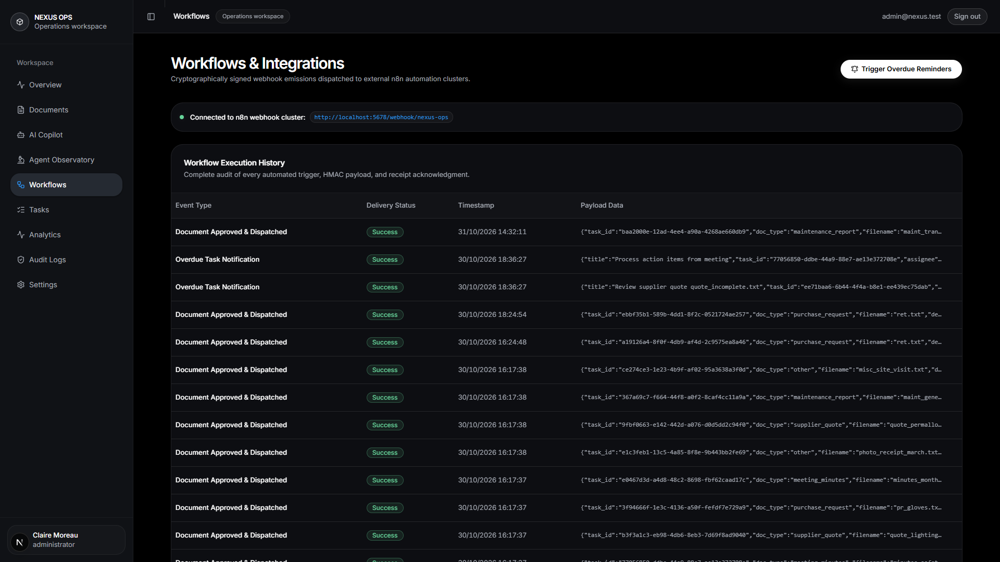

<template>
  <style>
    #root { position: absolute; inset: 0; background: #050505; }
    .frame { position: absolute; inset: 0; overflow: hidden; }
    .frame img {
      width: 1920px; height: 1080px;
      object-fit: cover; object-position: left top;
      transform-origin: 0 0; position: absolute; left: 0; top: 0;
    }
    #s3-row {
      position: absolute; left: 20px; top: 345px; width: 1300px; height: 110px;
      pointer-events: none;
      border-radius: 14px;
    }
    #s3-chip {
      position: absolute; left: 60px; bottom: 60px;
    }
    .chip {
      background: rgba(8, 12, 18, 0.94);
      border: 1px solid #2a3441;
      border-left: 4px solid #3b82f6;
      color: #ffffff;
      padding: 20px 30px;
      font-size: 36px; font-weight: 800;
    }
    .chip small { display: block; color: #8b98a9; font-size: 28px; font-weight: 600; margin-top: 6px; }
  </style>
  <div data-hf-id="hf-oocu" id="root" data-composition-id="scene3">
    <div data-hf-id="hf-3oeh" class="clip" id="s3-a" data-start="0" data-duration="4.32" data-track-index="0">
      <div data-hf-id="hf-kvob" class="frame" id="s3-hold">
        
        <div data-hf-id="hf-2oek" id="s3-row"></div>
      </div>
      <div data-hf-id="hf-ptxa" id="s3-chip">
        <div data-hf-id="hf-ls4e" class="chip">Signed webhook → n8n. Automatically.<small data-hf-id="hf-29kd">cryptographically signed emission · receipt acknowledged</small></div>
      </div>
    </div>
  </div>
  <script>
    const tl = gsap.timeline({ paused: true });
    // crop: whole audit row incl. event names ~ (615,473) → screen (960,430) at 2.1x
    tl.set("#s3-shot", { x: 960 - 2.1 * 615, y: 430 - 2.1 * 473, scale: 2.1, transformOrigin: "0 0" }, 0.0);
    tl.fromTo("#root", { opacity: 0 }, { opacity: 1, duration: 0.22, ease: "power1.out" }, 0);
    tl.fromTo("#s3-chip", { opacity: 0, y: 26 }, { opacity: 1, y: 0, duration: 0.35, ease: "power2.out" }, 0.12);
    // slow drift down the audit rows
    tl.to("#s3-shot", { scale: 2.24, x: 960 - 2.24 * 615, y: 430 - 2.24 * 480, duration: 4.0, ease: "sine.inOut", transformOrigin: "0 0" }, 0.3);
    tl.fromTo("#s3-row", { opacity: 0, boxShadow: "0 0 0 4px rgba(34,197,94,0.75)" },
      { opacity: 1, boxShadow: "0 0 0 5px rgba(34,197,94,0.8)", duration: 0.35, ease: "power1.out" }, 0.65);
    window.__timelines["scene3"] = tl;
  </script>
</template>
